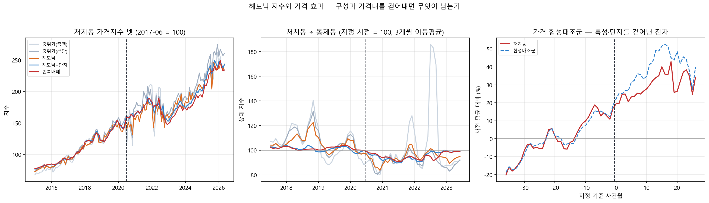
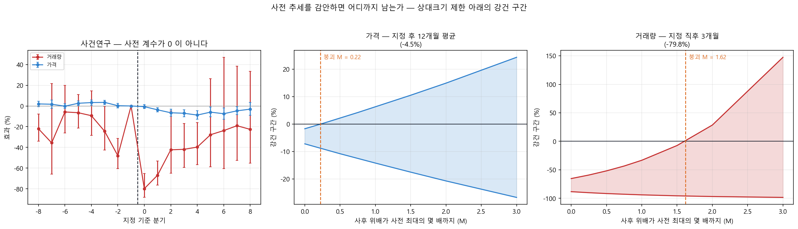
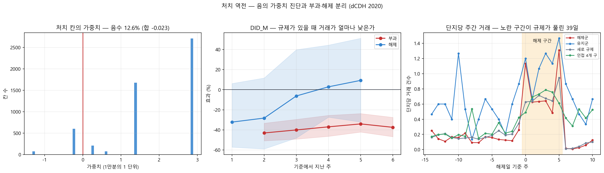
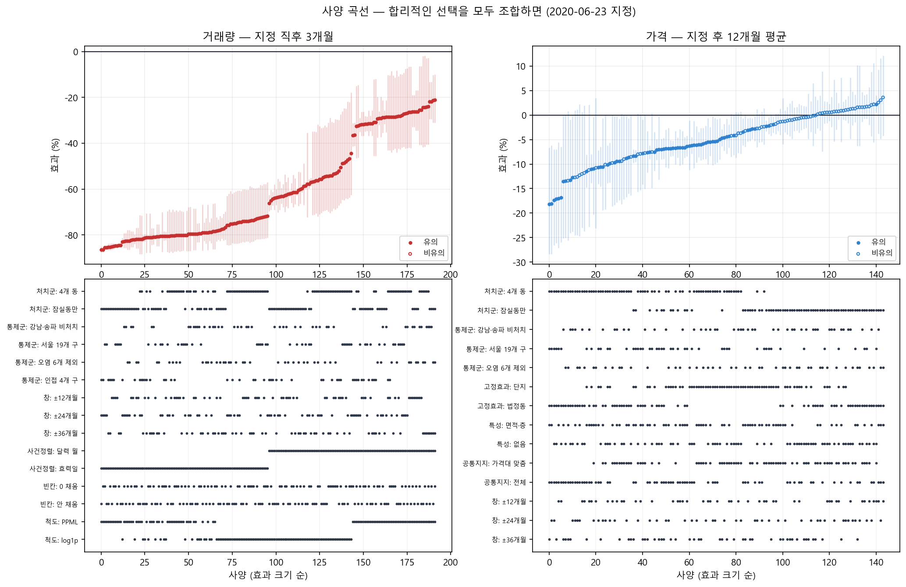
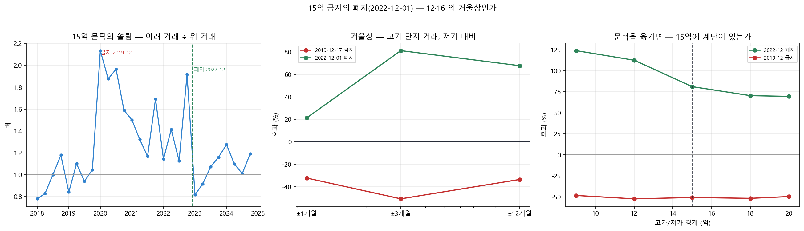
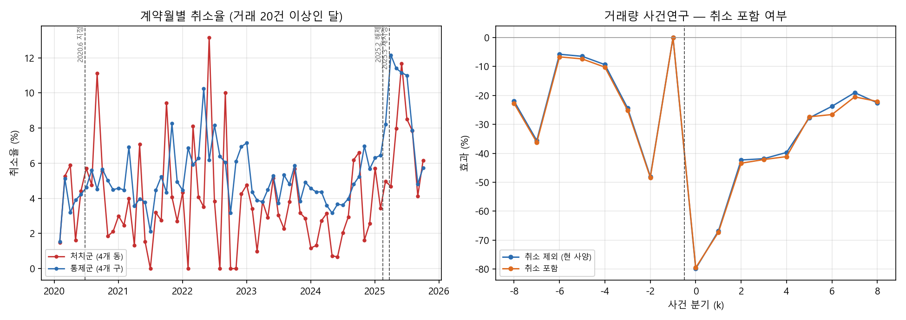

중간 발표 · 4주차가 남긴 숙제에 답한다
거래는 확실히 끊었다
가격은 그렇게 말할 수 없다
4주차 보고서가 남긴 미해결 다섯 건에 답한다. 둘은 답이 나왔고, 둘은 '못 한다'가 답이고, 하나는 내 추측이 틀렸다.
4주차 보고서가 남긴 미해결 다섯 건에 답한다. 둘은 답이 나왔고, 둘은 '못 한다'가 답이고, 하나는 내 추측이 틀렸다.
| 남긴 숙제 | 오늘 가져온 답 | |
|---|---|---|
| ① | 가격 효과가 가격대 통제에 약해진다 | 가격지수 다섯으로 다시 쟀다 |
| ② | 사전 추세를 얼마나 봐줘야 결론이 무너지나 | 무너지는 지점을 숫자로 냈다 |
| ③ | 처치가 역전되는 2025년에 그대로 써도 되나 | 가중치를 전부 뜯어봤다 |
| ④ | 설계 선택을 바꾸면 결론이 바뀌나 | 192가지를 전부 돌렸다 |
| ⑤ | 대출 규제를 한 번 더 가를 수 있나 | 금지의 폐지를 사건으로 걸었다 |
거래가 80% 줄면 팔리는 집의 종류가 바뀐다. 가격이 떨어진 것인지 싼 집이 더 팔린 것인지 갈라야 한다.
| 가격지수 | 고정하는 것 | 12개월 |
|---|---|---|
| 중위가 (총액) | — | −10.1% |
| 중위가 (㎡당) | 크기 | −12.5% |
| 헤도닉 | 면적·층 | −11.1% |
| 헤도닉 + 단지 | + 단지의 질 | −5.9% |
| 반복매매 | 같은 집 | −6.0% |
약점이 정반대인 두 방법이 −5.9%와 −6.0%에서 만난다. 집계 지수의 −10 ~ −12% 는 절반이 구성 변화였다.

사전 추세 위배가 사후에도 이어졌다고 가정한다. 얼마까지 봐줘도 결론이 남는지가 붕괴값이다.
| 무엇을 재나 | 붕괴값 M̄ |
|---|---|
| 거래량 — 지정 직후 3개월 | 1.62 |
| 거래량 — 24개월 평균 | 0.05 |
| 가격 — 지정 후 12개월 | 0.22 |
1.62 는 사전에서 실제로 본 위배의 1.6배까지 늘려 잡아도 구간이 0 을 넘지 않는다는 뜻이다.

같은 자료, 같은 사건, 같은 설계다. 결과변수만 바꾸면 세 가지 검정이 전부 갈린다.
| 검정 | 거래량 | 가격 |
|---|---|---|
| 설계 조합 중 유의하게 음수 (숙제 ④) | 192 / 192 | 70 / 144 |
| 붕괴값 M̄ — 사전 추세를 얼마나 봐줘도 남나 | 1.62 | 0.22 |
| 합성대조군 경험적 p | 0.007 | 0.511 |
2025년은 규제가 풀렸다가 다시 걸린다. 이미 처치된 집단이 다른 집단의 통제군 노릇을 하면 음의 가중치가 생긴다.
| 패널 | 처치 칸 | 음의 가중치 |
|---|---|---|
| 2020 주 분석 | 108 | 0 개 |
| 2025 해제·재지정 | 5,350 | 675개 · 합 −0.023 |
역전에 맞는 추정량으로 다시 재도 결론이 같다. 주 분석에는 애초에 문제가 없었다.

처치군·통제군·창·날짜 세는 법·빈칸 처리·척도를 전부 조합했다. 대안은 전부 선행연구가 쓴 것이거나 우리가 고치기 전에 쓰던 것이다.

| 설계 선택 | 추정치 폭 |
|---|---|
| 사건 시점 정렬 | 39.6%p |
| 척도 (log1p / PPML) | 11.4 |
| 처치군 정의 | 6.7 |
| 통제군 정의 | 2.3 |
| 창 길이 | 1.1 |
| 빈칸 처리 | 0.9 |
지정 효력일은 6월 23일이다. 달력 월로 묶으면 2020년 6월 한 칸에 지정 전(1~22일)과 후(23~30일)가 섞인다.
15억 초과 주담대 금지가 2022-12-01 에 풀렸다. 걸 때 줄었다면 풀 때 돌아와야 한다.
| 문턱을 옮기면 | 폐지 효과 |
|---|---|
| 9억 | +123.9% |
| 15억 — 실제 규제 문턱 | +81.1% |
| 20억 | +69.5% |
규제가 원인이라면 15억을 사이에 두고 끊겨야 하는데, 경계를 낮출수록 매끈하게 커진다. 금리와 1·3 대책을 가릴 수 없다.

신고 후 취소된 거래 6,293건을 뺐었다. 규제 직후에 몰린다면 그 자체가 정책 반응이므로 확인해야 했다.
| 확인한 것 | 결과 |
|---|---|
| 규제 직후에 몰리나 (세 사건) | −2.3 ~ +1.7%p |
| 취소 거래가 더 비싼가 | −0.5% (p=0.44) |
| 다시 넣으면 주 결과가 바뀌나 | 0.3%p |
같은 날 결정기록에 "약 4%p 부풀어 있다"고 적었다. 틀렸다 — 처치군과 통제군이 똑같이 깎이는 것을 빼먹었고, 이중차분은 그것을 지운다.

전체 재실행은 다시 만들어지는 파일만 본다. 아무도 안 만드는 파일은 영원히 낡은 채로 남는다.
| 장치 | 무엇을 잡나 |
|---|---|
| 고아 산출물 점검 | 이번 실행에서 안 만들어진 파일 |
| 문서 수치 검증 | 문서에 남은 폐기된 값 |
| 링크 점검 | 만들었는데 아무도 안 가리키는 문서 |
붙이자마자 넷을 더 잡았다 — 고아 파일 4개, 결정기록의 낡은 수치 1건, 안 걸린 보고서 1건, 그리고 10/02 발표 자료 자신.
| 무엇 | 말할 수 있나 | 근거 또는 막힌 곳 |
|---|---|---|
| 지정 직후 거래량 −71 ~ −80% | 예 | 192/192 · 17,550 중 1위 · 붕괴값 1.62 |
| 효과가 단지마다 달랐다 | 예 | 허가 면적 기준 — 2022 강화에서 소형만 −33% |
| 파급은 같은 동 안에만 있었다 | 예 | 유지 단지 −26.5% · 옆 동은 비유의 |
| 가격 −4 ~ −7% | 방향만 | 붕괴값 0.22 · 합성대조군 p 0.511 |
| 효과가 얼마나 오래 가나 | 아니오 | 기준 분기에 따라 −20 ~ +16% 로 흔들린다 |
| 옆 구로의 파급 | 아니오 | 창이 5주 · 늘리면 대출 규제가 섞인다 |
같은 동, 같은 시기, 같은 규제인데 어떤 단지는 거래가 거의 줄지 않았다.
| 2020-06-23 지정 | 거래량 효과 |
|---|---|
| 전용면적 40㎡ 이상 | −95.0% |
| 전용면적 40㎡ 미만 | +125.7% |
줄지 않은 정도가 아니라 늘었다. 허가 대상이 대지 18㎡ 초과였기 때문이다.